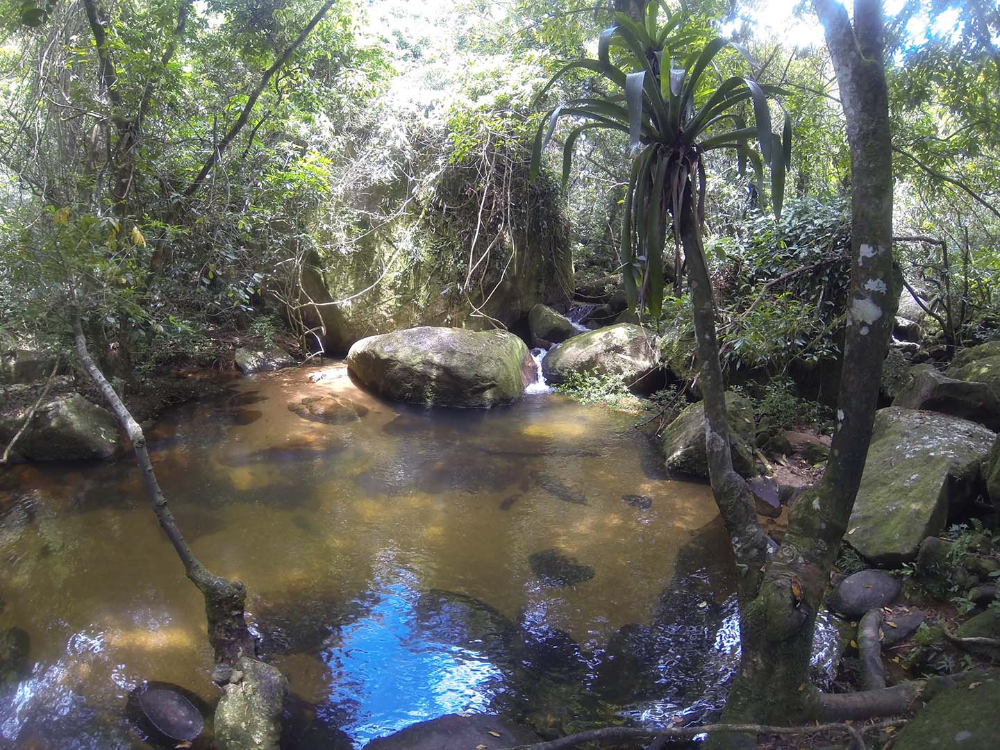
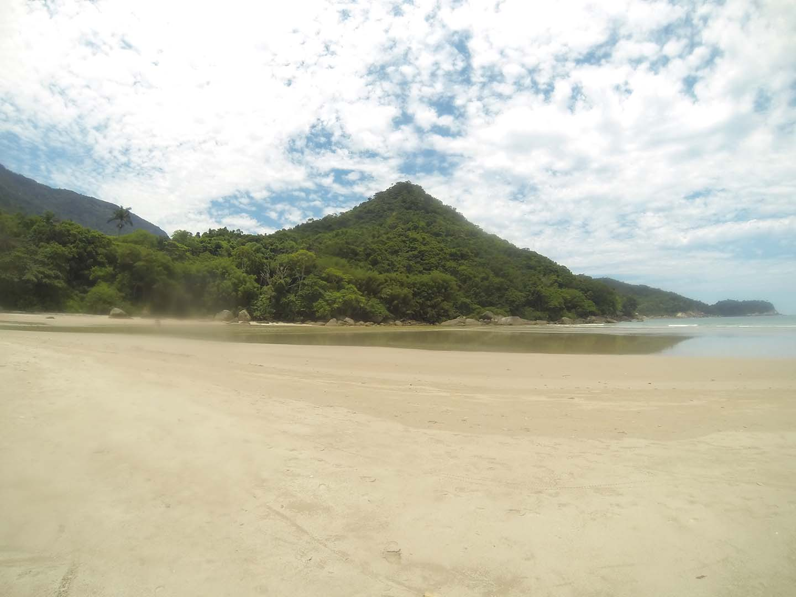

Chegamos no dia 18/12 e fomos montar nossas barracas no camping Sombra dos coqueirais, o camping fica localizado em frente ao cais de Abrão mas não se iluda achando que a brisa do mar chega até ele, fomos acordados com o calor todos os dias.
A lateral do camping é banhada por um rio o que, talvez, justifique o grande número de mosquitos no local. Depois de tudo pronto fomos encontrar a outra parte do grupo q já havia chegado cedo na ilha, sentamos num barzinho em frente a praia de Abraão pra beber uma cerveja e tomar banho de mar a noite.
Segundo dia:
Acordamos cedo e fomos logo tomar café, pois íamos fazer a trilha para vila de dois rios onde ficava o antigo presídio Candido Mendes, tomamos café, arrumamos as mochilas e pegamos a trilha que também serve de estrada para os carros da UERJ, que mantém o Centro de Estudos Ambientais e Desenvolvimento Sustentado - CEADS na região.
A primeira parada foi no Mirante da curva da morte.
Seguimos adiante pois a trilha é bem extensa, aproximadamente 7km.
A segunda parada já foi chegando na vila dois rios no poço dos soldados, onde paramos para tomar um banho refrescante no poço de água bem gelada e praticamente deserto.

De lá seguimos para praia de dois rios.
A praia é de areia amarelada, tem aproximadamente 1km de extensão,
água muito limpa, e dependendo da maré rola até de pegar umas ondas.
Na praia há apenas um senhor com uma barraquinha que serve um almoço que ele mesmo prepara em casa, cerveja Itaipava e refrigerantes. O almoço custa 25,00 e as bebidas 5,00 cada.

Ao sair da praia fomos ao único bar/restaurante da vila de dois rios, serve também almoço, uns petiscos e uma Brahma gelada. Recuperamos as energias e iniciamos nossa caminhada de volta a Abraão, afinal o caminho de volta é bem mais cansativo.
A noite fomos assistir um showzinho de forró que rolava na praça principal e depois fomos a praia de abraãozinho apreciar a lua e as estrelas, estava rolando um festival de raggae num hostel ao lado da praia, então ficamos ali ouvindo um som e bebendo umas cervejas que nós mesmo levamos.
Último dia:
Acordamos um pouco tarde dessa vez, pois ficamos até tarde na praia no dia anterior, fomos a padaria novamente tomar nosso café e dps direto pra praia preta, passamos o dia lá tomando banho e jogando a famosa "altola" do insanamente.
SIGA NOS NAS REDES SOCIAIS
INSTAGRAM
FACEBOOK